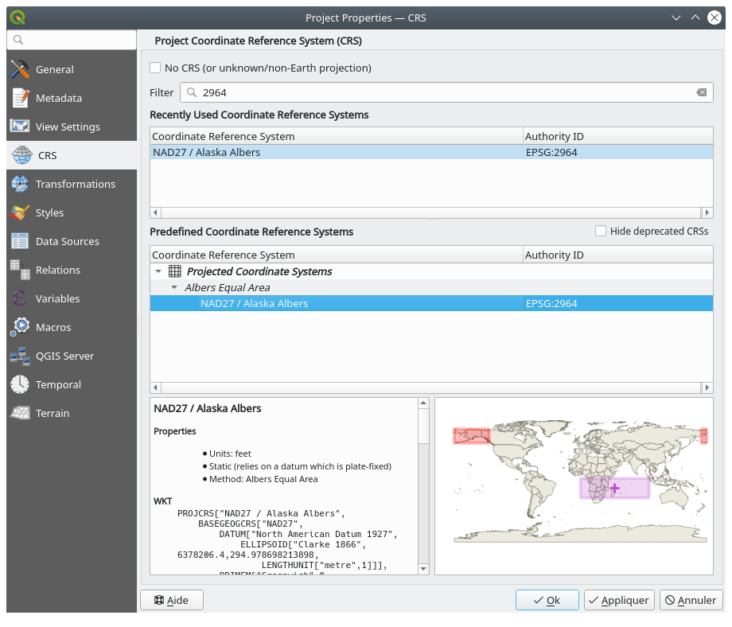

This chapter provides a quick overview of installing QGIS, downloading QGIS
sample data, and running a first simple session visualizing raster and vector
data.
Standard installers are available for MS Windows and macOS. Binary
packages (rpm and deb) or software repositories are provided for many flavors of
GNU/Linux .
If you need to build QGIS from source, please refer to the installation
instructions. They are distributed with the QGIS source code in a file
called INSTALL. You can also find them online at https://github.com/qgis/QGIS/blob/release-3_34/INSTALL.md.
If you want to build a particular release and not the version in development,
you should replace master with the release branch (commonly in the
release-X_Y form) in the above-mentioned link (installation instructions may differ).
It is possible to install QGIS (with all plugins and settings) on a flash drive.
This is achieved by defining a –profiles-path option
that overrides the default user profile path and forces
QSettings to use this directory, too.
See section System Settings for additional information.
This user guide contains examples based on the QGIS sample dataset (also called
the Alaskadataset). Download the sample data from
https://github.com/qgis/QGIS-Sample-Data/archive/master.zip and unzip the archive
on any convenient location on your system.
The Alaska dataset includes all GIS data that are used for the examples and
screenshots in this user guide; it also includes a small GRASS database.
The projection for the QGIS sample datasets is Alaska Albers Equal Area with
units feet. The EPSG code is 2964.
If you intend to use QGIS as a graphical front end for GRASS, you can find a
selection of sample locations (e.g., Spearfish or South Dakota) at the
official GRASS GIS website, https://grass.osgeo.org/download/data/.
Now that you have QGIS installed and a sample
dataset available, we will demonstrate a first sample
session. In this example, we will visualize a raster and a vector layer.
We will use:
the landcover raster layer (qgis_sample_data/raster/landcover.img)
and the lakes vector layer (qgis_sample_data/gml/lakes.gml)
Where qgis_sample_data represents the path to the unzipped dataset.
The data we will be working with are in AlbersEqualArea,
so let’s set the project’s CRS accordingly:
Click the Select projection button
in the bottom right of QGIS interface.
The project properties dialog opens with the CRS tab active.
Type ̀`2964` in the Filter text area.
Select the row with NAD27/AlaskaAlbers CRS name.

Fig. 5.1 Select the Coordinate Reference System of data
Press OK
Note
You can ignore/close for now the “ballpark transform” message
that could display.
Load the files in QGIS:
Click on the Open Data Source Manager icon.
The Data Source Manager should open in Browser mode.
Browse to the folder qgis_sample_data/raster/
Select the ERDAS IMG file landcover.img
and double-click it.
The landcover layer is added in the background while the Data Source
Manager window remains open.
To load the lakes data, browse to the folder qgis_sample_data/gml/,
and drag and drop the lakes.gml file over QGIS main dialog.
(Or just double-click as mentioned above.)
The Select Items to Add dialog opens, scanning the file.
This is due to .gml file format being able to store more than one layer at a time.
That’s it! You can see how easy it is to visualize raster and vector layers in
QGIS, configure them and generate your map in an image format you can use in
other softwares. Let’s move on to learn more about the available functionality,
features and settings, and how to use them.
Note
To continue learning QGIS through step-by-step exercises, follow the
Training manual.
 MS Windows and
MS Windows and  macOS. Binary
packages (rpm and deb) or software repositories are provided for many flavors of
GNU/Linux
macOS. Binary
packages (rpm and deb) or software repositories are provided for many flavors of
GNU/Linux  .
. Select projection button
in the bottom right of QGIS interface.
The project properties dialog opens with the CRS tab active.
Select projection button
in the bottom right of QGIS interface.
The project properties dialog opens with the CRS tab active. Filter text area.
Filter text area. Open Data Source Manager icon.
The Data Source Manager should open in Browser mode.
Open Data Source Manager icon.
The Data Source Manager should open in Browser mode. landcover.img
and double-click it.
The landcover layer is added in the background while the Data Source
Manager window remains open.
landcover.img
and double-click it.
The landcover layer is added in the background while the Data Source
Manager window remains open.
 lakes.gml file over QGIS main dialog.
(Or just double-click as mentioned above.)
lakes.gml file over QGIS main dialog.
(Or just double-click as mentioned above.)
 lakes layer.
Select it and press Add Layers.
lakes layer.
Select it and press Add Layers. Layer has no coordinate reference system set next to it.
Let’s adjust that.
Layer has no coordinate reference system set next to it.
Let’s adjust that. Zoom In tool on the Navigation toolbar
Zoom In tool on the Navigation toolbar Symbology tab
Symbology tab Labels tab
Labels tab
 Draw text buffer
Draw text buffer
 to
store your changes as a
to
store your changes as a